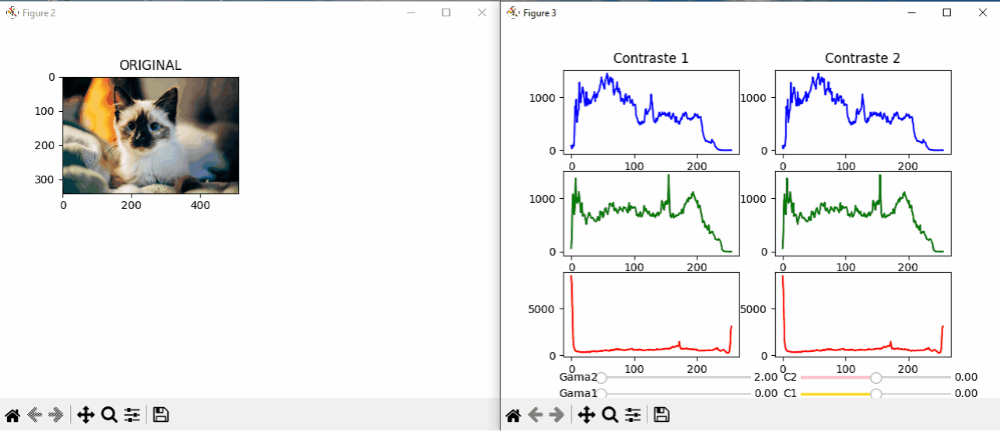
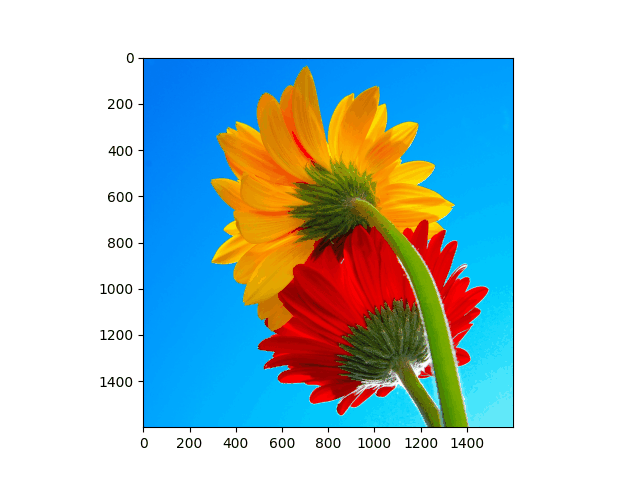
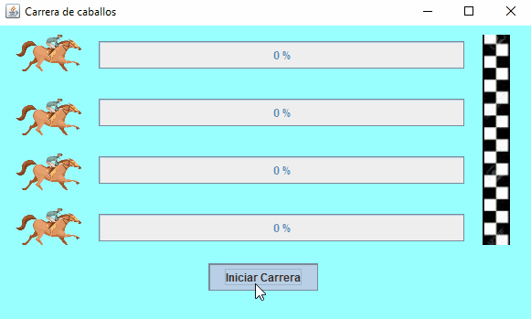
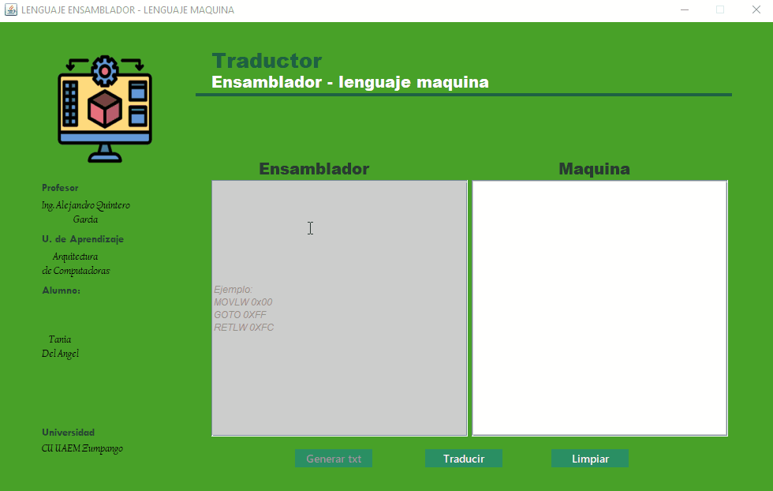
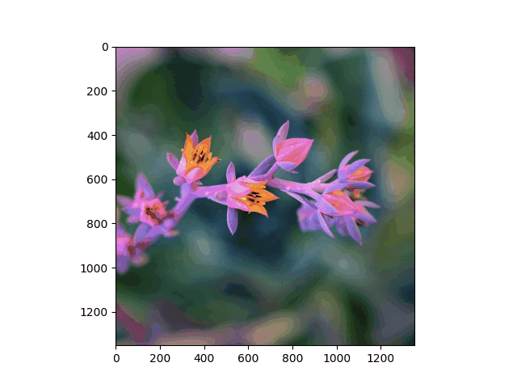
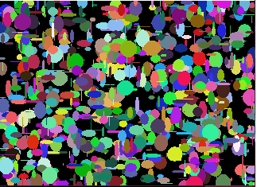

Sobre mi
Hola, mi nombre es Tania, soy egresada en ingeniería en computación, estoy en proceso de titulación. Me apasiona la programación y aprender nuevas Tecnologías, soy una persona comprometida y muy hábil. Me es muy fácil aprender y obtener nuevas habilidades.
Ingeniero en computación.
Mi formación académica como Ingeniero fue en la Universidad Autonóma del Estado de México (UAEMEX). Comence en el año 2018 y termine en el año 2022. En esta etapa adquirí habilidades de programación en diferentes lenguajes.
- GitHub: https://github.com/taniadah
- Teléfono: +52 5525202002
- Edad: 22 años
- Gmail: taniadelangelh@gmail.com
Mi servicio social lo hice en un CBT en donde me encargué de la mantenimiento instalación y desinstalación de equipos de computo, e instalación de programas así como revisión de trabajos.
Skills
Algunos de los diferentes lenguajes en los que he trabajado son:
Tecnologias
Estas son algunas de las tecnologías con las que más he trabajado y te cuento que es lo que he hecho con cada una de ellas.
En java he creado aplicaciones enfocadas en el uso de PC, he trabajado con hilos, sockets, interfaces gráficas con swing y tengo algunas nociones de JavaFX. También he implementado código con principios de algoritmos genéticos, y algunos algoritmos de clasificación como KNN y Kmeans,

Java
Python lo he utilizado para principios de graficación como curvas de Bezier, morphing y transformaciones de figuras. Por otra parte he implementado codigos tanto de nociones de redes neuronales como de algoritmos genéticos desde 0. También lo he utilizado para tratamiento de imágenes sin ayuda de librerias como OpenCV.

Python
En MySQL ademas de crear bases de datos, agregar información a las tablas y hacer consultas he implementado el uso de triggers, vistas y procedimientos.

MySQL
También estoy mejorando mis habilidades en HTML y CSS ya que mis conocimientos son muy básicos y empiezo a aprender de JavaScript

HTML, CSS Y JS
Portafolio
Para ver más sobre mis proyectos te invito a visitar mi GitHub.
https://github.com/taniadah





